16MDS82
DATA PRIVACY AND SECURITY
(Unit III)
Outline
Message Authentication
Authentication Function
Message Authentication Code
Hash Function
Secure Hash Algorithm
Digital Signature Standard
Message Authentication
Message authentication is a mechanism or service used to verify the integrity of a message.
Message authentication assures that data received are exactly as sent by (i.e., contain no modification, insertion, deletion, or replay) and that the purported identity of the sender is valid.
Symmetric encryption provides authentication among those who share the secret key.
Encryption of a message by a sender's private key also provides a form of authentication.
Message Authentication (Contd…)
The two most common cryptographic techniques for message authentication are:
Message Authentication Code (MAC)
Secure Hash Function
A MAC takes a variable-length message and a secret key as input and produces an
authentication code.
A recipient in possession of the secret key can generate an authentication code to verify the integrity of the message.
A hash function maps a variable-length message into a fixed length hash value, or message digest.
Message Authentication Requirements
In the context of communications across a network, the following attacks can be identified.
Disclosure
Traffic analysis
Masquerade
Content modification
Sequence modification
Timing modification
Source repudiation
Destination repudiation
Any message authentication or digital signature mechanism has
At the lower level, there must be some sort of function that produces an authenticator: a value to be used to authenticate a message.
This lower-level function is then used as a primitive in a higher- level authentication protocol that enables a receiver to verify the authenticity of a message.
The types of functions that may be used to produce an authenticator may
be grouped into three classes.
its authenticator.
Basic Uses of Message Encryption
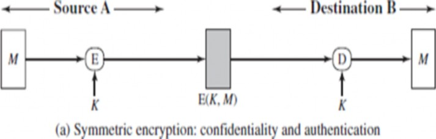
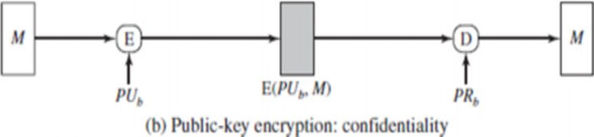
Message Encryption (Contd…)
Basic Uses of Message Encryption
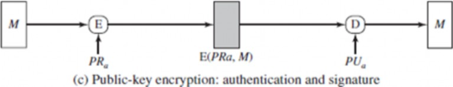
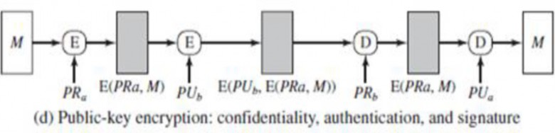
An authentication technique involves the use of a secret key to generate a small fixed-size block of data, known as a cryptographic checksum or MAC, that is appended to the message.
This technique assumes that two communicating parties, say A and B, share a common secret key.
When A has a message to send to B, it calculates the MAC as a function of the message and the key:
MAC = C(K, M)
where M= input message
C = MAC function
K = shared secret key
MAC = message authentication code
The message plus MAC are transmitted to the intended recipient.
The recipient performs the same calculation on the received message, using the
same secret key, to generate a new MAC.
The received MAC is compared to the calculated MAC.
If we assume that only the receiver and the sender know the identity of the
secret key, and if the received MAC matches the calculated MAC, then
The receiver is assured that the message has not been altered.
If an attacker alters the message but does not alter the MAC, then the receiver’s calculation of the MAC will differ from the received MAC.
Because the attacker is assumed not to know the secret key, the attacker cannot alter the MAC to correspond to the alterations in the message.
The receiver is assured that the message is from the alleged sender.
Because no one else knows the secret key, no one else could prepare a
message with a proper MAC.
If the message includes a sequence number, then the receiver can be assured of the proper sequence because an attacker cannot successfully alter the sequence number.
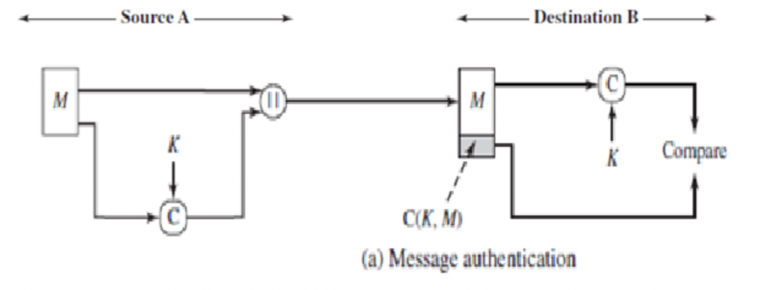
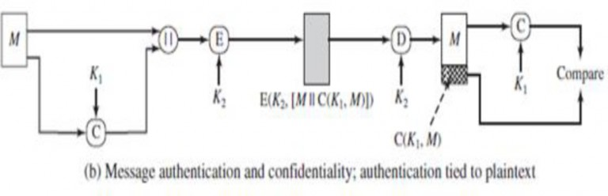

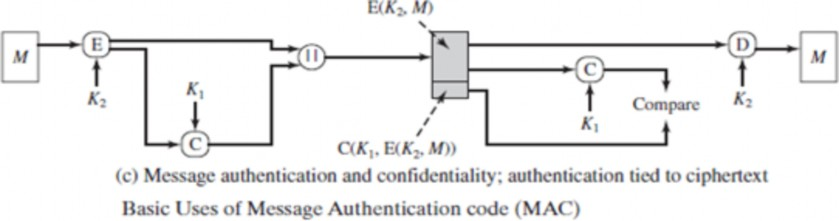
Hash Function
A variation on the message authentication code is the one-way hash function.
A hash function accepts a variable-size message M as input and produces a fixed-size output, referred to as a hash code H(M).
The hash code is also referred as message digest or hash value.
A hash value h is generated by a function H of the form
h = H(M)
where M is a variable-length message
H(M) is the fixed-length hash value
The hash value is appended to the message at the source at a time when the message is assumed or known to be correct.
The receiver authenticates that message by recomputing the hash value.
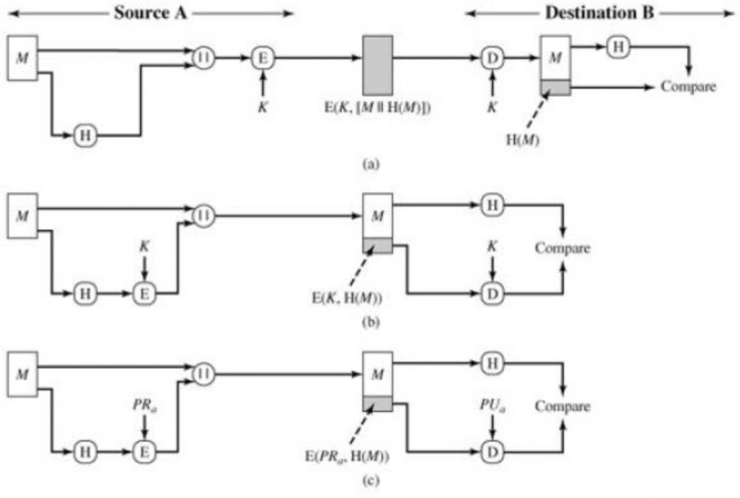
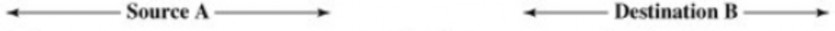
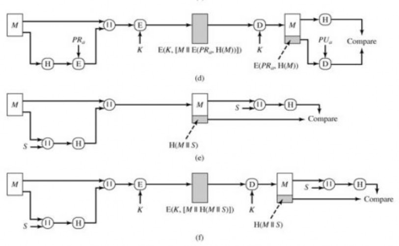
Fig (a) :
The message plus concatenated hash code is encrypted using symmetric
encryption.
Only A and B share the secret key, the message must have come from A and has not been altered.
The hash code provides the structure or redundancy required to achieve
authentication.
Because encryption is applied to the entire message plus hash code, confidentiality is also provided.
Fig (b):
Only the hash code is encrypted, using symmetric encryption.
This reduces the processing burden for those applications that do not
require confidentiality.
E(K, H(M)) is a function of a variable-length message M and a secret key K, and it produces a fixed-size output that is secure against an opponent who does not know the secret key.
Fig (c) :
Only the hash code is encrypted, using public-key encryption and using the sender's private key.
As with (b), this provides authentication. It also provides a digital signature, because only the sender could have produced the encrypted hash code.
In fact, this is the essence of the digital signature technique.
Fig (d):
If confidentiality as well as a digital signature is desired, then the message plus the private-key encrypted hash code can be encrypted using a symmetric secret key. This is a common technique.
Fig (e):
It is possible to use a hash function but no encryption for message authentication.
The technique assumes that the two communicating parties share a common secret value S.
A computes the hash value over the concatenation of M and S and appends the resulting hash value to M.
Because B possesses S, it can recompute the hash value to verify.
Because the secret value itself is not sent, an opponent cannot modify an
intercepted message and cannot generate a false message.
Fig (f):
Confidentiality can be added to the approach of (e) by encrypting the entire
message plus the hash code.
The purpose of a hash function is to produce a "fingerprint" of a file, message, or other block of data.
To be useful for message authentication, a hash function H must have the following properties
H can be applied to a block of data of any size.
H produces a fixed-length output.
H(x) is relatively easy to compute for any given x, making both hardware and software
implementations practical.
For any given value h, it is computationally infeasible to find x such that H(x) = h. This is
sometimes referred to in the literature as the one-way property.
For any given block x, it is computationally infeasible to find y ≠x such that H(y) = H(x). This is sometimes referred to as weak collision resistance.
It is computationally infeasible to find any pair (x, y) such that H(x) = H(y). This is sometimes referred to as strong collision resistance.
Message: “Hello my name is Alice”
H | E | L | L | O | -> | 07 | 04 | 11 | 11 | 14 |
M | Y | N | A | M | -> | 12 | 24 | 13 | 00 | 12 |
E | I | S | A | L | -> | 04 | 08 | 18 | 00 | 11 |
I | C | E | X | X | -> | 08 | 02 | 04 | 23 | 23 |
05 | 12 | 20 | 08 | 08 | ||||||
HASH CODE -> | F | M | U | I | I | |||||
A sends Message and Hash code to B.
B computes hash code using the received message and checks it with the received hash code.
If both hash codes are same then integrity and authentication is proved and the
message has not been altered; else it shows that the message has been altered.

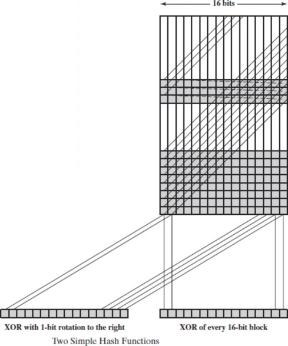
The hash algorithm involves repeated use of a compression function, f, that takes two inputs (a n - bit input from the previous step, called the chaining variable, and a b-bit block) and produces an n-bit output.
At the start of hashing, the chaining variable has an initial value that is specified as part of the algorithm.
The final value of the chaining variable is the hash value.
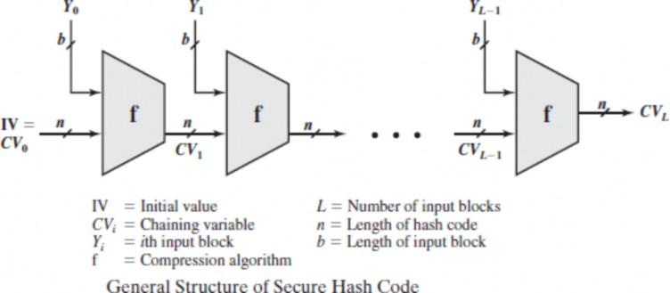
Secure Hash Algorithm
SHA was developed by the National Institute of Standards and Technology (NIST) and published as a federal information processing standard (FIPS 180) in 1993.
SHA is based on the hash function MD4, and its design closely models MD4.
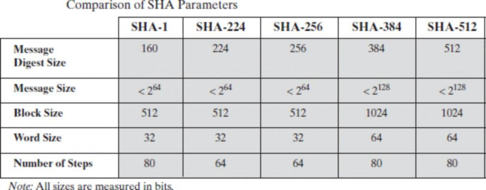
The SHA-512 algorithm takes as input a message with a maximum length of less than 2128 bits and
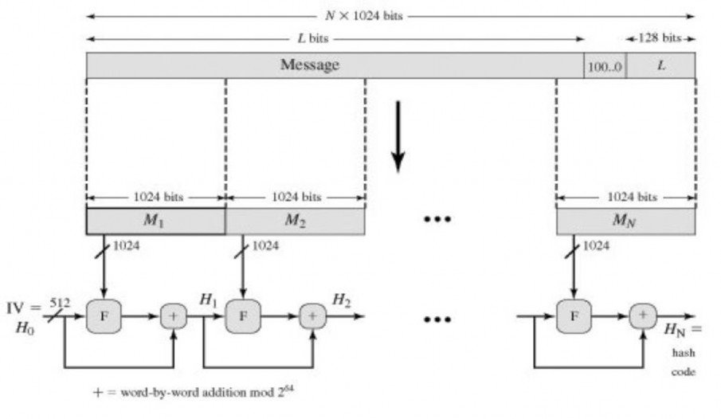
produces as output a 512-bit message digest. The input is processed in 1024-bit blocks.
The processing consists of the following steps.
Step 1 - Append padding bits
Step 2 - Append length
Step 3 - Initialize hash buffer
Step 4 - Process message in 1024-bit (128-word) blocks
Step 5 – Output – hash code
The message is padded so that its length is congruent to 896 = modulo 1024 [length 896 (mod 1024)].
Padding is always added, even if the message is already of the desired
length. Thus, the number of padding bits is in the range of 1 to 1024.
The padding consists of a single 1-bit followed by the necessary number of 0-bits.
This block is treated as an unsigned 128-bit integer (most significant byte first) and contains the length of the original message (before the padding).
The outcome of the first two steps yields a message that is an integer multiple of
1024 bits in length. The expanded message is represented as the sequence of 1024-bit blocks M1, M2,..., MN, so that the total length of the expanded message is N x 1024 bits.
A 512-bit buffer is used to hold intermediate and final results of the hash
function.
The buffer can be represented as eight 64-bit registers (a, b, c, d, e, f, g, h).
These registers are initialized to the following 64-bit integers (hexadecimal values):
a = 6A09E667F3BCC908, b = BB67AE8584CAA73B, c = 3C6EF372FE94F82B c = A54FF53A5F1D36F1, e = 510E527FADE682D1, f = 9B05688C2B3E6C1F g = 1F83D9ABFB41BD6B, h = 5BE0CDI9137E2179
The heart of the algorithm is a module that consists of 80 rounds; this module is labeled F.
Each round takes as input the 512-bit buffer value abcdefgh, and updates the contents of the buffer.
At input to the first round, the buffer has the value of the intermediate hash value, Hi-1.
Each round t makes use of a 64-bit value Wt derived from the current 1024-bit block being processed (Mi)
After all N 1024-bit blocks have been processed, the output from the Nth stage is the 512-bit message digest.
Example :
Step 1 and 2: Pre-Processing Messages in SHA-512
We denote the message by M.
Suppose the length of this message in bits, is l.
The final message length after pre-processing should be a multiple of 1024 bits.
The Pre-Processing Steps are as follows:
Append the bit "1" to the end of the message.
Now, append "0" bits to the end of the message, where is the smallest non-negative solution to (l+1+k) = 896 mod 1024.
After this, express the message length l in binary in a 128-bit block and append this block at the end.
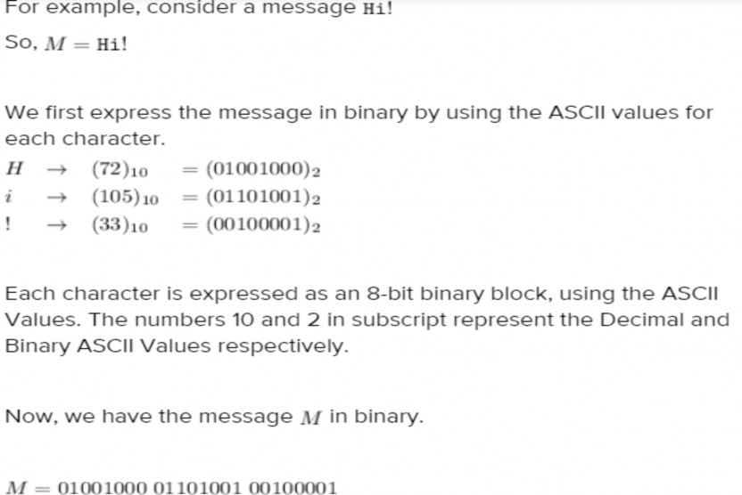
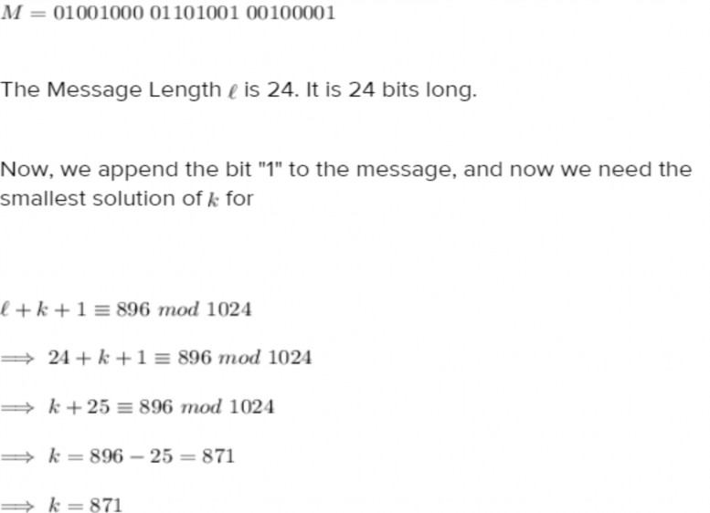
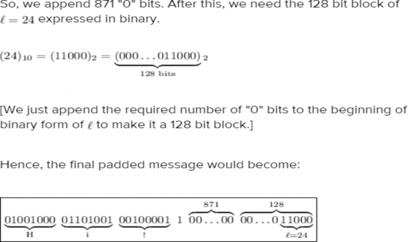
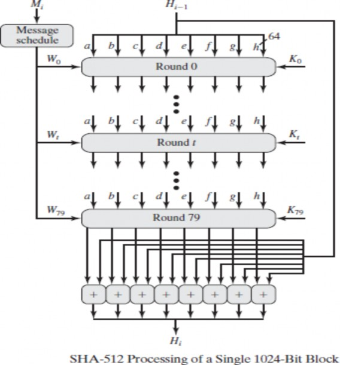
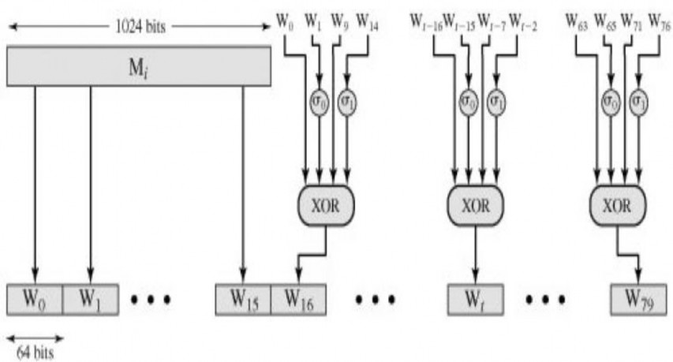
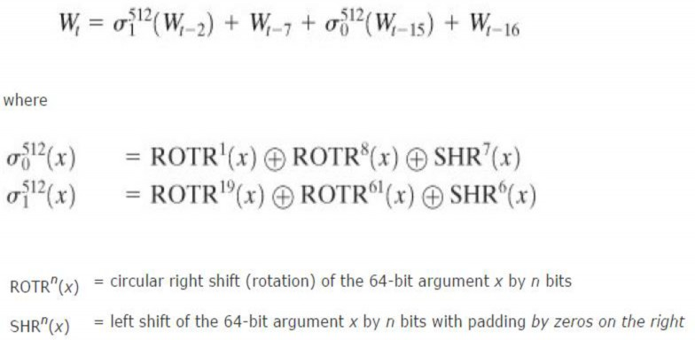
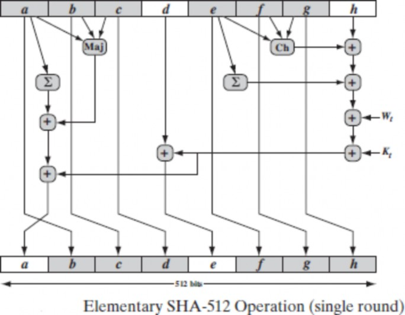
SHA-512 Round Function
SHA-512 Round Function
Each round is defined by the following set of equations:
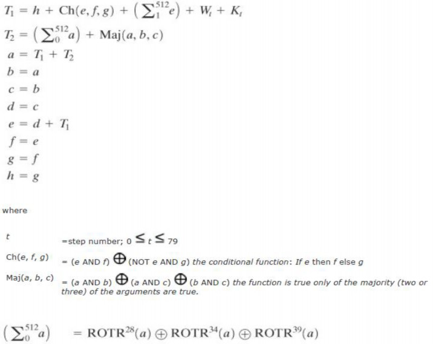
45
C:\1-SudhaCIT\Security\DPS
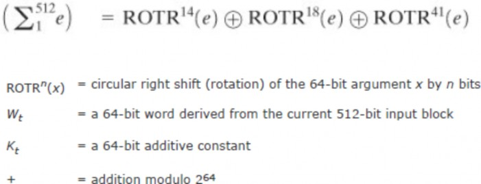
46
C:\1-SudhaCIT\Security\DPS